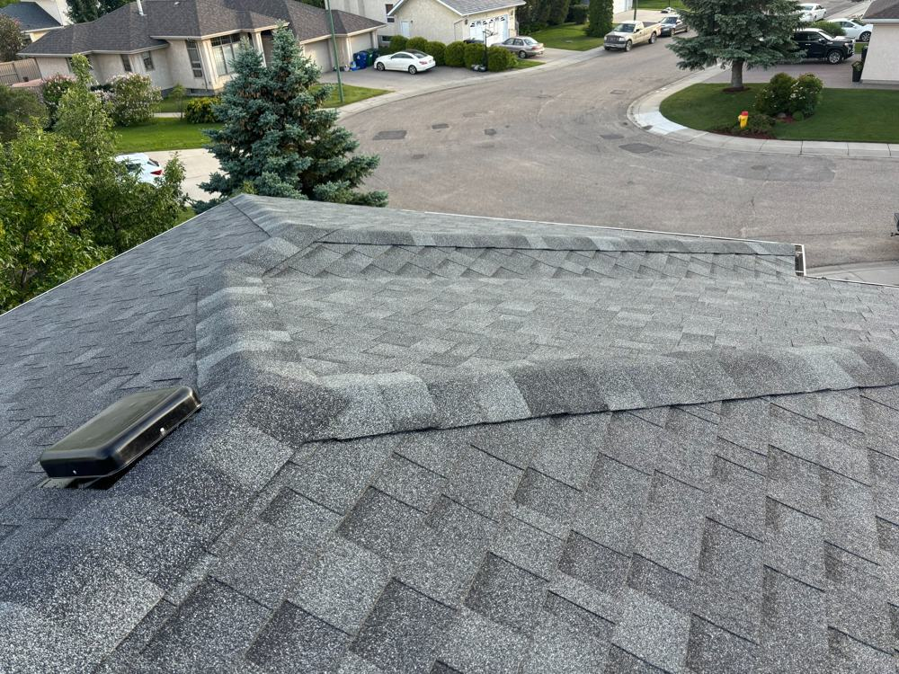

How Long Do Shingles Really Last in Saskatchewan?

Shingle packages love to advertise 30-year, 40-year, even "lifetime" warranties. In Saskatchewan, take those numbers with a grain of salt — or maybe a whole shaker. The prairie climate is genuinely hard on roofs, and the realistic lifespan here is shorter than the brochure suggests.
What Saskatchewan does to a roof
Three things age shingles faster here than in milder climates:
- UV exposure. Saskatoon gets more sunshine hours than almost anywhere in Canada. UV breaks down the asphalt in shingles year after year, making them brittle. South-facing slopes always age first — walk around your house and you'll see the difference.
- Freeze-thaw cycles. The city swings above and below freezing dozens of times each spring and fall. Water works into tiny cracks, freezes, expands, and pries them wider. It's slow, but it's relentless.
- Wind. Prairie wind lifts shingle edges and works fasteners loose over time. After every big wind event, it's worth a look from the ground for lifted tabs or missing pieces.
Realistic numbers
Shingle packages rate their products for 25 to 30 years, but Saskatchewan's harsh freeze-thaw cycles cut real-world life to 50–75% of the rating. That puts most asphalt roofs at 15 to 18 years before they start failing — unless the roof is properly maintained, which can stretch it further.
Installation quality matters as much as the shingle. Poorly installed roofs can fail at 12 years from bad nailing or missing underlayment, while a well-installed, well-ventilated, well-maintained roof has the best shot at reaching the upper end of that range.
Signs yours are aging out
- Granule loss. Check your gutters and downspout outlets — piles of sandy granules mean the shingles' protective layer is washing away.
- Curling or cupping. Edges turning up or centers sagging. Once this starts across a slope, the clock is ticking.
- Cracked or missing shingles. A few can be repaired. Widespread cracking means the asphalt is done.
- Bald spots. Areas where granules are gone and the black mat shows through have no UV protection left.
Getting the most out of them
Ventilation is the big one — a hot attic cooks shingles from underneath and can shave years off their life. Keep gutters clean so water doesn't back up under the edges. And get a proper inspection every few years after the 10-year mark; catching a small issue early is always cheaper than the leak it becomes.